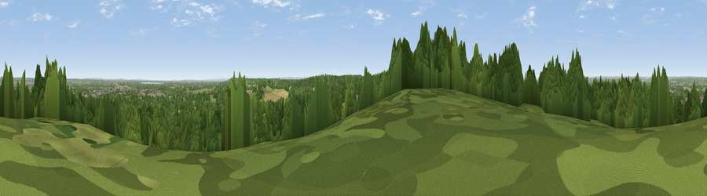

Viewpoint near Oakley Green
#39448 in England · top 23% of its area beats it · near Oakley Green · path 210 mWhere it is
The exact computed spot (SU 93825 75225). Click the marker for map links.
Public access: the nearest public right of way is about 210 m away — the final stretch may cross private land. Computed from Natural England's CRoW access layer and OpenStreetMap rights of way — not the legal definitive map. Always verify locally.
The view, rendered

A 360° render of this exact spot computed from the terrain model, tree cover and land cover — summer colours, afternoon light, calibrated against photographs of famous viewpoints. Real trees, hedges and buildings will differ in detail.
The panorama
Grey silhouette: terrain skyline in each direction (720 bearings, Earth curvature and refraction included). Dashed green: skyline with trees (+15 m) and buildings (+8 m) as obstacles. Blue strip: how far the ground is visible on each bearing.
Where the view opens
Wedge length = distance to the farthest visible ground on that bearing (vegetation-aware). Rings at 10, 25 and 50 km.
What fills the view
48% woodland · 30% grassland · 15% built-up · 6% cropland · 1% water
Angular shares of the visible panorama (visual magnitude), not map area. Landscape diversity 0.53 (0–1 Shannon).
Key numbers
More beautiful places nearby
The staircase of upgrades: each row has a higher view potential than everything closer. Driving times are estimates from straight-line distance, calibrated against real road routing — check an actual route before setting out.
| Place | Direction | Drive | Score |
|---|---|---|---|
| Viewpoint near The Village | SE · 2 km | ~4 min | 27.1 |
| Windsor Castle | ENE · 4 km | ~9 min | 39.8 |
| Viewpoint near Fawley | NW · 24 km | ~39 min | 48.8 |
| Viewpoint near Compton | S · 27 km | ~43 min | 49.4 |
| Viewpoint near Shere | SSE · 29 km | ~46 min | 50.1 |
| Viewpoint near Watlington | NW · 30 km | ~46 min | 67.1 |
| Viewpoint near Kingston Blount | NW · 30 km | ~47 min | 67.4 |
| Viewpoint near Watlington | NW · 30 km | ~47 min | 70.6 |
51.46823, -0.65064 · source: screening · position refined by local search. Computed location — check access rights before visiting.